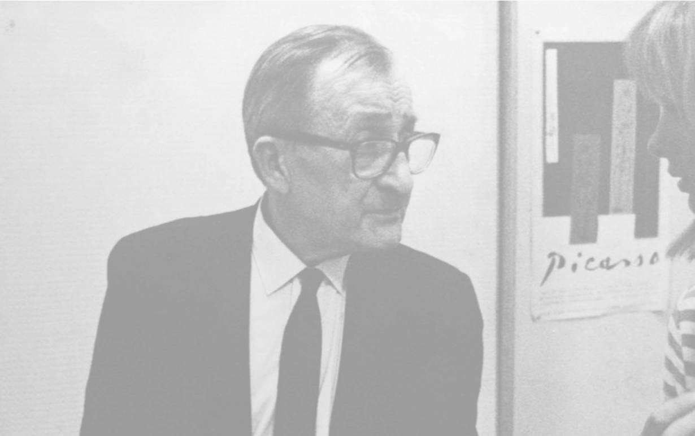

선생님 안녕하세요. 선생님께서는 일생동안 끊임없이
새로움과 변화를 추구해 오셨는데요.
그렇게 할 수 있었던 원동력은 무엇입니까?
저는 같은 일을 반복하는 것과 구태의연한 일을 무척 싫어합니다.
항상 지루해지거나 매너리즘에 빠지는 것을
적으로 간주하고 경계했기 때문에 새로움을 향해 한 걸음 더 나아가고자 노력했고,
그러기 위해서 계속 변화를 시도했죠.
오늘날 전자 출판 시대를 맞이하여 디자인 작업들이
단 한 번의 클릭으로도 손쉽게 이루어지고 있습니다.
이러한 현상에 대해 어떻게 생각하시는지요?
저는 새로운 산업 사회에 맞는 새로운 기술을 충분히 활용하여야 한다고 생각합니다.
다만 테크닉은 목적에 이르는 수단일 뿐이라는 것을 명심해야 합니다.
왜냐하면 테크닉 그 자체가 목적이 될 경우 결과는 상투적인 것 Cliche이 되기 때문입니다.
새로운 기술을 활용하여 새로운 사회에 맞는 미를 발견하는 것이 중요합니다.
<하퍼스 바자>의 편집 디자인에는 이처럼 반복의 원리를
혁신적으로 사용한 페이지들이 주목을 끕니다.
사진과 사진이 반복되기도 하고, 사진과 텍스트가
반복 되기도 하면서 마치 쌍둥이 같은 느낌을 주는데요?
각각 다른 두 개의 이미지를 사용하여 하나의 이미지처럼 만드는 방법으로 1936년부터
하퍼스 바자의 편집 디자인에 많이 사용했던 편집 방식입니다. 같아 보이지만
실제로 다른 두 가지 모습은 초현실주의적인 전통의 일부분으로 우리의 내면과
외면일 수도 있고, 거울에 반영된 모습일 수도 있습니다. 이러한 방법은 왼쪽과 오른쪽
페이지의 균형을 유지할 수 있게 해주는 동시에 매우 다양한 디자인을
연출할 수 있다는 점에서 자주 사용했고 제가 무척 좋아했던 방법입니다.
<하퍼스 바자>의 두드러지는 특징 중 하나는
흰 여백이 풍부하다는 것입니다.
흰 공간을 선호하시는 특별한 이유가 있나요?
흰색은 순수함과 깨끗함을 상징합니다. 저는 그런 흰 공간을 사랑합니다.
흰색은 떠나온나의 조국 러시아의 흰 눈을 연상하게도 하고 복잡한 세계에서
조용히 쉴 수 있는 안식처를 제공해주기도 합니다. 또한 검은 부분과의
대비를 통해 극적인 효과를 줄 수도 있습니다. 2차 세계대전 이후
패션 산업의 침체와 물자의 부족으로 흰색 공간을
경제적으로 사용하기 시작했고, 이는 점차적으로
하퍼스 바자의 대표적인 특징이 되었지요. 리차드 애비든은
레이아웃을 고려해서 흰 여백이 풍부한 사진을 찍었습니다.
가끔씩 이러한 여백을 위해 글이 생략되는 경우도 있었지요.
1960년대 이후에는 베트남 전쟁, 여성 운동, 인권 운동 등
사회적인 문제에 대한 관심이 고조되면서
독자들은 더 많은 정보를 요구하게 되었고 인플레이션으로
인해 하퍼스 바자를 디자인할 때 누렸던 사치를
젊은 디자이너들이 더이상누릴수없게된것같습니다.
선생님께서 <하퍼스 바자>를 디자인하실 때
가장 중요하게 생각하시는 디자인 원리는 무엇인가요?
대비를 들 수 있겠습니다. 저는 사진을 크게 확대해서 지면 바깥으로 나가게 하는
블리딩Bleeding 의 방법, 인화된 사진을 필요한 부분만 남겨놓고 잘라내는
크로핑Cropping 방법이나 여백을 많이 남긴다든지 또는 내용상의 대조를 주는 방법을
이용하여 작품에 극적인 효과를 주었습니다. 전쟁 후 초현실적인 스타일이 사라지게
됨에 따라 전혀 어울릴 것 같지 않은 이미지들을 병치juxtaposition 시켜 놀라움과
충격을 줄 수 있는 새로운 방법을 모색하기도 했습니다. 리차드 애비든은 이와 같은
시각상의 대비를 현장감나는 야외 촬영을 통해 생생한 이미지로 담아낸 훌륭한
작가였습니다. 크리스찬 디올Christian Dior 의 옷을 입고 너무나 우아하게 포즈를 취한
여인과 거친 야생코끼리를 같이 찍은 사진이 그 대표적인 예라 할 수 있는데, 이런 사진들은
독자들에게 강한 인상을 줄 수 있었습니다.
보통 패션 사진에서는 옷의 디테일을 보여주는 것이
일반적이라고 할 수 있는데, 1950년대의 <하퍼스 바자>에서는
상이 흐릿하고 초점이 맞지 않는 듯한 사진들을
사용하신 이유가 무엇일까요?
1950년대에 이르러 추상표현주의가 우세해짐에 따라 사물의 세부사항을 표현하는 것이나
묘사하는 것에서 벗어나 무엇이든지 암시적, 인상적으로 표현하는 것이 지배적인 상황이 되었습니다.
1945년에 출판된 ‘발레’에 수록된 사진의 영향을 받은 느낌을 주며 흐릿하면서도 움직임이 가득한 사진은
파리 컬렉션에서 새로 나온 옷이 없을 경우 상대적으로 디자인의 질이 낮은 미국제 옷으로
기사를 대체해야 할 때 아주 효과적이었지요. ‘적게 보여주면 더 좋게 보일 수 있다
The less shown The better.’는 겁니다. 반대로 가장 최신의 패션을 선보일 때에도
이러한 방법을 사용했습니다. 전후 패션에서 중요한 것은 옷이 아니라
옷을 입는 사람의 라이프 스타일이었고, 자유롭고 임의적인 이미지의 표현이
이처럼 흐릿하고 추상적인 이미지를 통해서 가능했기 때문입니다.
선생님께서는 <하퍼스 바자>를 디자인하는 데에 있어서
영화의 개념을 많이 도입하신 것으로 압니다.
영화와 잡지는 어떠한 관계가 있습니까?
잡지와 책은 영화처럼 일정 시간에 걸쳐 순차적으로 보게 됩니다. 따라서 잡지의 레이아웃에 있어서도
전체적인 흐름이 중요하지요. 영화에서 격정적인 부분과 잔잔한 부분이 있는 것처럼 잡지도 고요한 느낌과
극적인 느낌이 잘 결합해야 합니다. 저는 잡지의 레이아웃을 잡을 때 펼침 페이지Spread를 하나의 면으로
생각하고 전체적인 균형과 조화들을 고려하면서 작업합니다. 그런 다음 바닥에 페이지를 모두 늘어놓고
전체적인 흐름에 맞추어서 이리저리 페이지들을 옮깁니다. 잡지를 만들 때 전체적으로 무리없이
부드럽게 연결시키는 것보다 더 중요한 것은 가장 극적인 레이아웃과 속삭이듯 고요한 레이아웃을
잘 결합하여 높낮이가 있고 리듬이 있는 흐름을 만들어내는 것입니다. 잡지 아트 디렉터의 역할 역시
영화의 감독과 비슷합니다. 여러 가지 능력을 가진 사람들을 지휘하여 하나의 작품을 완성하지요.
그런 면에서 영화와 잡지는 매우 닮은 구석이 있는 것이죠.
<하퍼스 바자>에서는 직접적으로 영화의 느낌을 주는
편집 방식을 종종 발견할 수 있습니다.
이러한 구성 방식은 패션 잡지인
<하퍼스 바자>에 어떤 효과를 줄 수 있나요?
한 예로 1937년 3월호 <하퍼스 바자>의 <고속도로의 목가시 Idyll of the Parkway>는 화창한 3월 어느날
한 쌍의 연인이 야외로 드라이브를 하다가 날씨위 취해 그만 속도 위반으로 경찰에게 적발되는데,
경찰도 따듯한 마음을 지녔기에 그냥 이해하고 보내준다는 이야기를 사진을 이용하여 영화의 장면처럼
서술적인 형식으로 구성한 것입니다. 자동차의 거울이나 반짝이는 부분에 반사된 장면을 찍은 마틴 문카치
Martin Munkachi 의 사진은 컨셉트나 표현에서 영화적인 느낌이 강합니다. 그래서 현실에서 벗어나
꿈의 세계를 추구하는 패션의 속성과 잘 결합되어 있습니다. 또. 다른 예로는 사진을 영화의 네거티브 필름과 같이
모아 표현한 것으로, 이 방법에서는 움직임을 가진 영화처럼 직접적으로 속도나 움직임 그 자체를 표현할 수 있습니다.
“모든 디자이너들, 사진 작가들, 그리고 아트 디렉터들은
그들이 의식하건 아니건 간에 알렉세이 브로도비치의 제자들이다” 라는
리차드 애비든의 말처럼 선생님은 당대에 유명한 디자이너들을
많이 배출하셨는데요. 대표적인 디자이너들을 좀 말씀해 주시겠습니까?
사진 작가로는 하퍼스 바자>에서 일한 리차드 애비든, 아트 케인Art Kane, 사진 작가면서
<하퍼스 주니어 바자>의 아트 디렉터이기도 했던 릴리안 바스만, <보그>의 사진작가이면서
일본의 패션 디자이너인 이세이 미야케|ssey Miyake 와의 작업으로도 유명한 어빙 펜,
로버트 프랭크Robert Frank, 브루스 데이비드슨 Bruce Davidson, 히로Hiro, 솔 메드닉Sol Mednick,
다이안 아버스Dane Artbus 등을 들 수 있습니다.